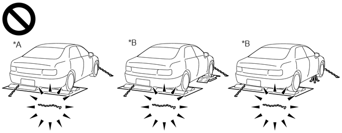
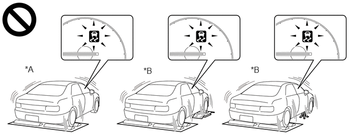

| Last Modified: 12-09-2025 | 6.11:8.1.0 | Doc ID: RM100000002K519 |
| Model Year Start: 2024 | Model: Tacoma HV | Prod Date Range: [03/2024 - ] |
| Title: BRAKE CONTROL / DYNAMIC CONTROL SYSTEMS: ELECTRONICALLY CONTROLLED BRAKE SYSTEM (except Gasoline Model): PRECAUTION; 2024 - 2026 MY Tacoma HV [03/2024 - ] | ||
PRECAUTION
PRECAUTION FOR DISCONNECTING CABLE FROM NEGATIVE AUXILIARY BATTERY TERMINAL
NOTICE:
After the ignition switch is turned off, there may be a waiting time before disconnecting the negative (-) auxiliary battery terminal.
Click here
![2024 - 2026 MY Tacoma Tacoma HV [12/2023 - ]; SETUP: WHEN DISCONNECTING OR RECONNECTING BATTERY TERMINAL: BEFORE DISCONNECTING BATTERY](../../../../stylegraphics/info.gif)
HINT:
When disconnecting and reconnecting the auxiliary battery, there is an automatic learning function that completes learning when the respective system is used.
Click here
TROUBLESHOOTING PRECAUTIONS
(a) When there is a malfunction with terminal contact points or part installation problems, removal and installation of the suspected problem parts may return the system to the normal condition either completely or temporarily.
(b) Before disconnecting a connector or removing and installing a component in order to narrow down the malfunctioning part, make sure to perform the following procedure.
- Check for and record any DTCs and Freeze Frame Data that were stored around the time that the malfunction occurred.
-
If any open circuit DTCs related to intermittent (momentary interruptions) malfunctions are output, check the intermittent monitor.
Click here
NOTICE:
When disconnecting a connector or removing a fuse or relay, make sure that the ignition switch is off, the brake pedal is not depressed, and the driver door has been closed for 4 minutes or more*.
*: Differs according to vehicle conditions
(c) Since the system may be influenced by malfunctions in systems other than the brake control system, be sure to check for DTCs in other systems.
HANDLING PRECAUTIONS
(a) Do not remove or install electronically controlled brake system parts such as the steering sensor, yaw rate and acceleration sensor (airbag ECU assembly) or brake pedal stroke sensor assembly except when required, as they need to be adjusted correctly after removal and installation.
(b) Be sure to perform preparation before work and confirmation after work is completed by following the directions in the repair manual when working on the electronically controlled brake system.
(c) When removing/installing or replacing an electronically controlled brake system related component, disconnect the cable from the negative (-) auxiliary battery terminal before performing the procedure.
NOTICE:
After turning the ignition switch off, waiting time may be required before disconnecting the cable from the negative (-) auxiliary battery terminal. Therefore, make sure to read the disconnecting the cable from the negative (-) auxiliary battery terminal notice before proceeding with work.
Click here
(d) This system is equipped with 2 skid control ECUs; the No. 1 skid control ECU (brake booster with master cylinder assembly) and No. 2 skid control ECU (brake actuator assembly). For this reason, it is necessary to follow the specified procedure when reading DTCs, Freeze Frame Data, the Data List, etc.
The respective menus for each ECU are as follows:
- No. 1 skid control ECU: Chassis / Brake Booster
-
No. 2 skid control ECU: Chassis / Brake/EPB*
*: Electric Parking Brake System
(e) If the No. 1 skid control ECU (brake booster with master cylinder assembly), No. 2 skid control ECU (brake actuator assembly), brake booster with accumulator pump assembly or a sensor has been removed and installed, it is necessary to check the system for problems after the parts have been reassembled. Check for DTCs using the GTS. Also check that the system functions and signals received by the ECU are normal using Dealer Mode (Signal Check).
HINT:
If a Dealer Mode (Signal Check) inspection is not performed, a sensor not calibrated malfunction DTC may be stored even if the No. 1 skid control ECU (brake booster with master cylinder assembly), No. 2 skid control ECU (brake actuator assembly) and all sensors are normal.
(f) If the brake pedal is depressed before the brake control system is prepared to operate, the pedal stroke may seem unusually long or short. This is due to the fact the stroke simulator cut solenoid has not yet operated and is not a malfunction.
After the ignition switch is turned to ON or the brake pedal is depressed twice or more, the stroke simulator will operate and the brake pedal stroke will remain consistent.
DTC PRECAUTION
(a) Warnings for some DTCs cannot be cleared by only repairing the malfunctioning parts. If the warning is displayed even after repair work, the DTC should be cleared after turning the ignition switch off.
NOTICE:
If a DTC for a malfunctioning part reappears after it is cleared, then it has been stored again.
PRECAUTIONS FOR REMOVAL, INSTALLATION AND REPLACEMENT OF COMPONENTS
(a) After replacing certain components, it may be necessary to update the ECU security key.
Click here
(b) Perform "Calibration" after removal, installation or replacement of any of the following components:
Click here
- No. 1 skid control ECU (brake booster with master cylinder assembly)
- No. 2 skid control ECU (brake actuator assembly)
- Brake pedal stroke sensor assembly (including when performing an adjustment)
- Brake pedal
- Yaw rate and acceleration sensor (airbag ECU assembly)
(c) Perform Dealer Mode (Signal Check) inspection after removal, installation or replacement of any of the following components:
Click here
- Speed sensor
- Speed sensor rotor
CHASSIS DYNAMOMETER PRECAUTION
(a) Enter Inspection Mode to disable TRAC and VSC operation when using a chassis dynamometer.
Refer to Inspection Mode Procedure: Click here
CAUTION:
-
Activation of the parking support brake, TR(A)C, or VSC may eject the vehicle from the drum tester such as speedometer tester, brake tester and chassis dynamometer. When using the drum tester, make sure to perform the following and disable the parking support brake, TR(A)C and VSC.
- Turn the parking support brake off.
-
Enter Inspection Mode or VSC OFF mode.
-
Refer to Inspection Mode Procedure: Click here
-
Refer to Inspection Mode Procedure: Click here
-
Do not use the drum tester with any of the lock chains disconnected.

*A
for Part Time 4WD (When in 2WD mode)
*B
for Full Time 4WD
- Using the drum tester with a lock chain disconnected could cause the vehicle to begin moving unexpectedly.
-
Do not use the drum tester when the parking support brake, the TR(A)C, AUTO LSD* and VSC are active.

*A
for Part Time 4WD (When in 2WD mode)
*B
for Full Time 4WD
- *: for Part Time 4WD (When in 2WD mode)
-
Activation of the parking support brake, TR(A)C, AUTO LSD* or VSC may eject the vehicle from the drum tester.
- *: for Part Time 4WD (When in 2WD mode)
CAN COMMUNICATION SYSTEM PRECAUTIONS
(a) The CAN communication system is used for communication between the No. 1 skid control ECU (brake booster with master cylinder assembly), No. 2 skid control ECU (brake actuator assembly), steering sensor, yaw rate and acceleration sensor (airbag ECU assembly) and other ECUs. If there is a malfunction in a CAN communication line, corresponding DTCs for the communication line are output.
(b) If any CAN communication DTCs are output, repair the malfunction, then troubleshoot the electronically controlled brake system while communication is normal.
(c) In order to enable CAN communication, a specific type of wiring is used for the CAN communication lines. The wiring used for each communication line is a twisted pair of wires that have an equal length. A bypass wire should not be used, because the data being transmitted will be corrupted.
|
|
|